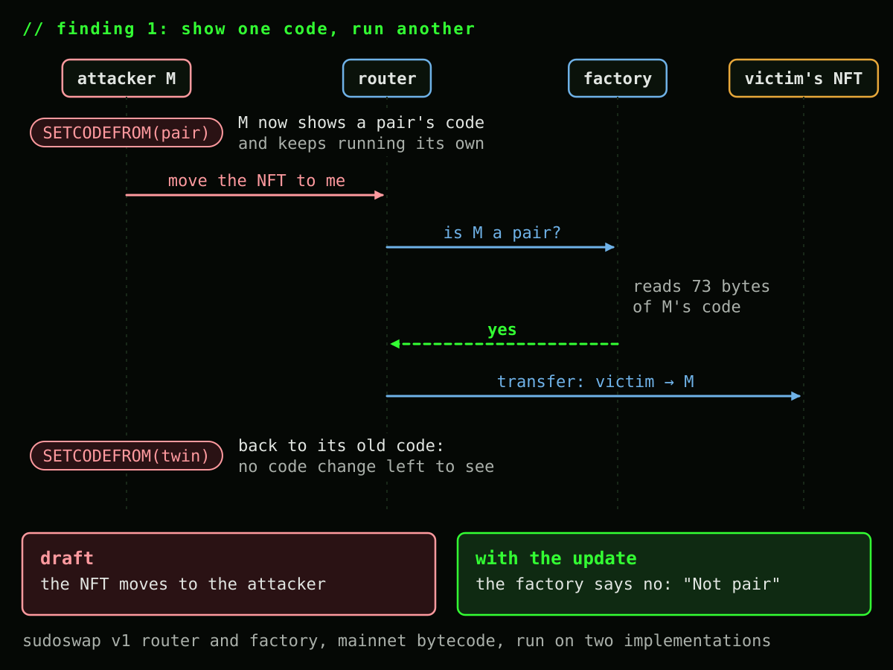
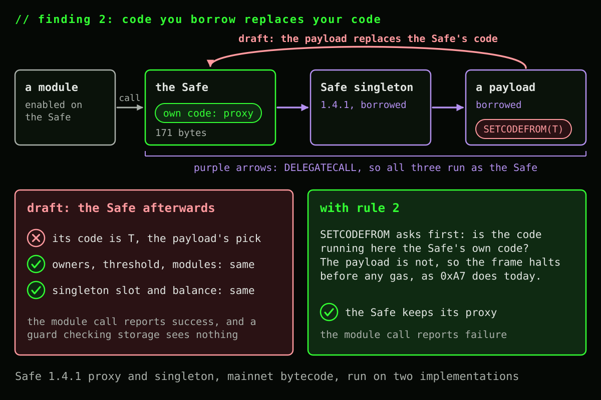
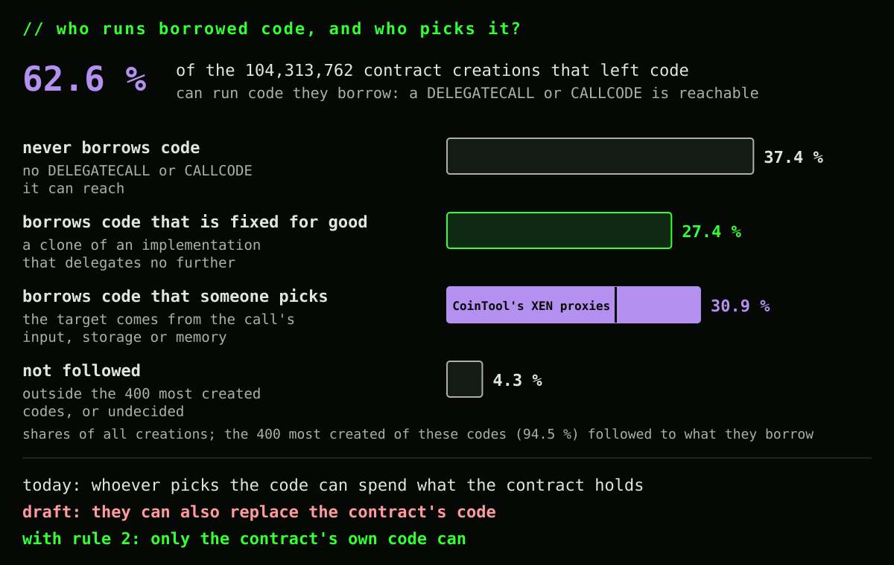
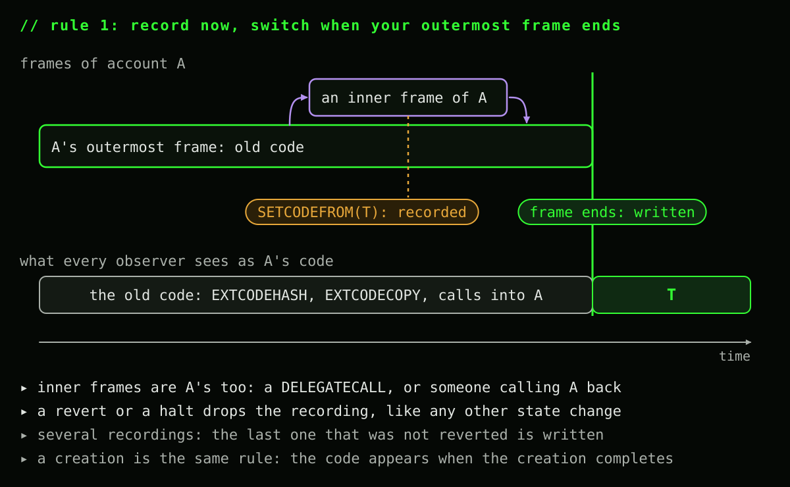
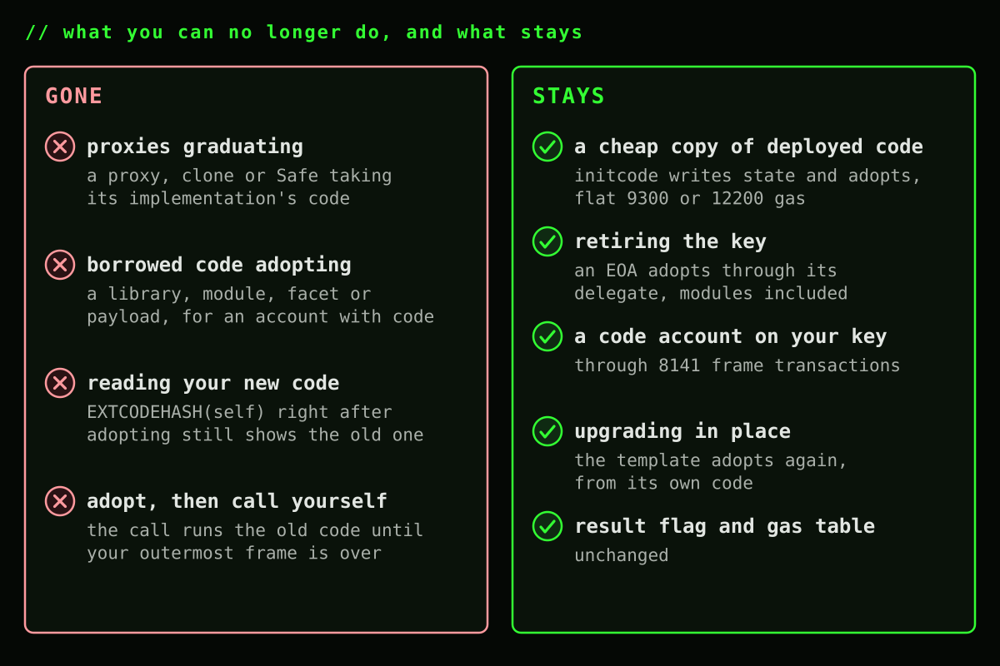
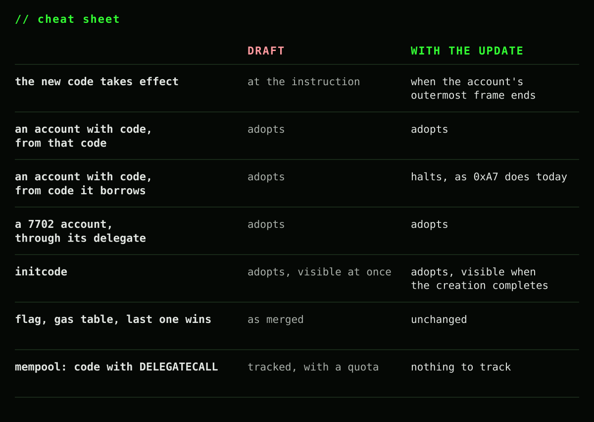

SETCODEFROM points an account's code hash at code another contract already deployed. The draft was generous: any account could adopt, as often as it liked, from any code running on its behalf, and the new code showed up the instant the instruction ran.
That generosity is what the menu of account modes was built on, and it is where the trouble was. We ran the worst cases against bytecode that is on mainnet today: two things broke, and each gets a rule. Nothing is at risk now. SETCODEFROM is not live, and the fix goes into the EIP, not into anybody's contracts.
> Two things you can count on today
Since Cancun, EIP-6780 lets SELFDESTRUCT delete a contract only in the transaction that created it, so deployed code no longer changes. Contracts quietly started leaning on two guarantees that follow.

Neither is a consensus rule, but EIP-7702 protected the first on purpose: it refused to let EXTCODEHASH follow delegations so that no account could "temporarily masquerade as having a particular codehash".
> Finding 1: show one code, run another
Under the draft, the frame that runs SETCODEFROM keeps executing the code it loaded, while everybody else already sees the adopted code: the account wears one code and runs another. sudoswap's router moves any NFT approved to it for a caller whose code starts like one of its pairs, a sound check today.

Any "is this caller one of my clones" check is fooled the same way, ERC-1167's reference isClone included. Rule 1 closes it.
> Finding 2: code you borrow replaces your code
The draft also let borrowed code adopt for its borrower, and said so: "this EIP allows delegated execution to update the caller's account code". That is how proxies were going to graduate, and how a contract loses its code to something it merely ran.

Why that is worse than it sounds:
- The code is what enforces the owners. The proxy sends every call to the singleton that checks them. Replace it, and whoever wrote the new code controls the Safe.
- Nothing a guard watches has moved. In the Bybit hack the payload rewrote the slot that points at the singleton. Here owners, threshold, modules, balance and that slot are all unchanged.
- There is no way back, and it is not about Safes. The owners can restore storage, but only the new code can change the code. Every contract that runs borrowed code is exposed, and the next section shows that is most of them.
How rule 2 fixes it. SETCODEFROM halts unless the code running in the frame is the account's own. In the Safe the frame runs the payload, so it halts, exactly as 0xA7 does there today, and the Safe keeps its proxy. Rule 1 alone would only delay the replacement until the Safe's outermost frame ends.
> Who runs borrowed code?
We scanned all code left by contract creations on mainnet up to block 26,430,999 and asked how much of it runs code it borrows.

A reachable DELEGATECALL does not mean anyone can pick its target, but that is the point: under the draft, "my code never changes" becomes a property of everything a contract borrows. Rule 2 makes it the contract's own again.
> Rule 1: record now, switch when your outermost frame ends
SETCODEFROM no longer changes the code hash. It records a pending one, written when the account's outermost frame ends successfully. Until then the account is exactly what it was, to itself and to everybody else.

- Outermost, by address, because a
DELEGATECALLor a call back into the account is still that account's frame, running the old code. - Not the end of the transaction. Later calls, and later frames of an 8141 frame transaction, run the new code, so migrating in one call and initialising in the next still works.
> Rule 2: only your own code can replace your code
If the account holds code and the frame is running other code, SETCODEFROM halts, exactly as 0xA7 does there today.

EIP-6913, the withdrawn SETCODE proposal, had this rule in a stricter form, for the same reason: code without the instruction "can be safely assumed to be immutable".
The rule looks at the code an account holds, not at what kind of account it is: with frame transactions, "EOA" and "contract" only describe that code. An account with no code, or only a 7702 delegation, has nothing of its own to protect, and its delegate is how it migrates.
> Does any deployed code already run 0xA7?
With rule 2, a contract deployed today can change its code only if its own code executes 0xA7. Does any?

No. Two codes execute it, and both halt on the very next instruction for every input, just as they halt on the byte itself today.
The census left 6,650 codes open: the byte sits behind a jump destination that only a jump computed from data could reach. We analysed every one, and none lets a stranger run the byte and keep the result:
| Why SETCODEFROM can't change them | Codes | Contracts |
|---|---|---|
| The code halts or reverts right after the byte, dropping any adoption | 6,007 | 6,506 |
| No path from the first instruction ever reaches the byte | 637 | 767 |
| The byte sits inside data, out of a stranger's reach | 6 | 29 |
A static analysis settles the first two rows by itself. It cannot settle the last six: in five, a jump target comes from calldata or storage, and one is too big to finish, so we read them. Four are MEV bots whose jump tables only their owner drives, never as far as the byte. One is a Boson Protocol facet whose function pointer only its initializer writes. The last is an older contract whose byte sits in the compiler's metadata, past the end of its code; in the 12 million states the analysis did explore, every jump was fixed. On an archive node, 223 real transactions of the 25 hardest cases never jumped into data.
The 7,289 contracts hold about 5 ETH, 197 WETH and 0.9 million USDC, nearly all in the first row; the last row holds no ETH and only token dust. A contract that let a stranger pick its jump target would be broken already: that is its bug, not SETCODEFROM's.
> Each rule has its own job
We ran all four combinations on both mainnet cases, and neither rule covers for the other. The sudoswap attacker adopts from its own code, so rule 2 cannot stop it; the Safe is fooled about nobody's identity, so rule 1 only delays the damage.

> What you can no longer do
Four things go, and the first one hurts.

- Proxies do not graduate. To the EVM, a proxy adopting through its implementation and an implementation hijacked through
DELEGATECALLare the same thing, so closing one closes the other. Proxies keep their ordinary upgrade paths, and one deployed after the fork can carry SETCODEFROM in its own code. - The rest is about order. Put the upgrade function in your own bytecode, check the source before adopting rather than your code hash after, and initialise before adopting or in a later call: until your outermost frame ends, a call to yourself still runs the old code.
When you write a template, remember that code you run through DELEGATECALL can still call you as yourself: rule 2 stops borrowed code from running the instruction, not from asking your own code to.
> What this does not fix
Code that an EOA's delegate runs can still adopt for it, for good. What that code can take is not new: under EIP-7702 a delegate, or a module it runs, can already move everything the account holds. What is new is permanence. Today the key can always re-delegate away from a bad delegate; once the account holds adopted code, EIP-7702 ignores the key's delegations and EIP-3607 rejects its transactions. That is the price of letting key-less accounts migrate, and it deserves its own decision.
> Cheat sheet
